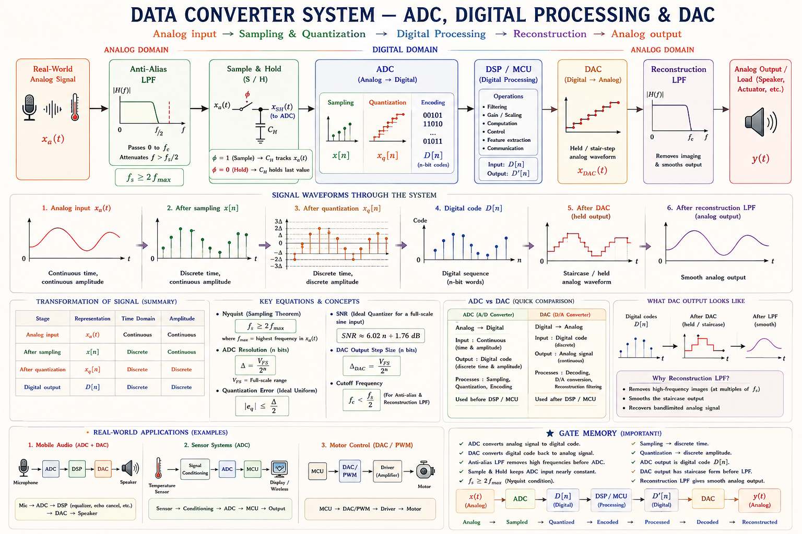
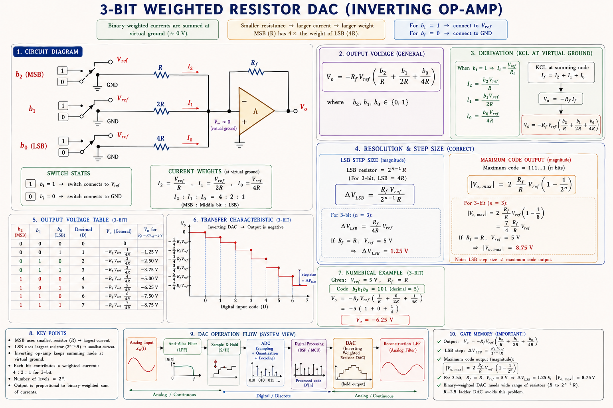
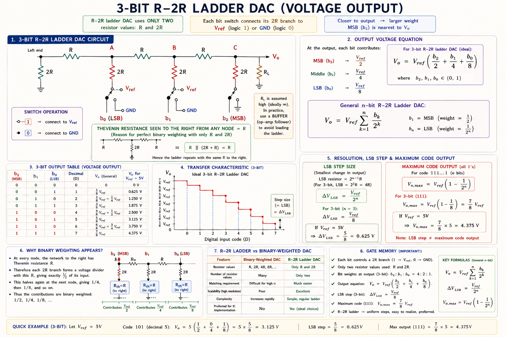
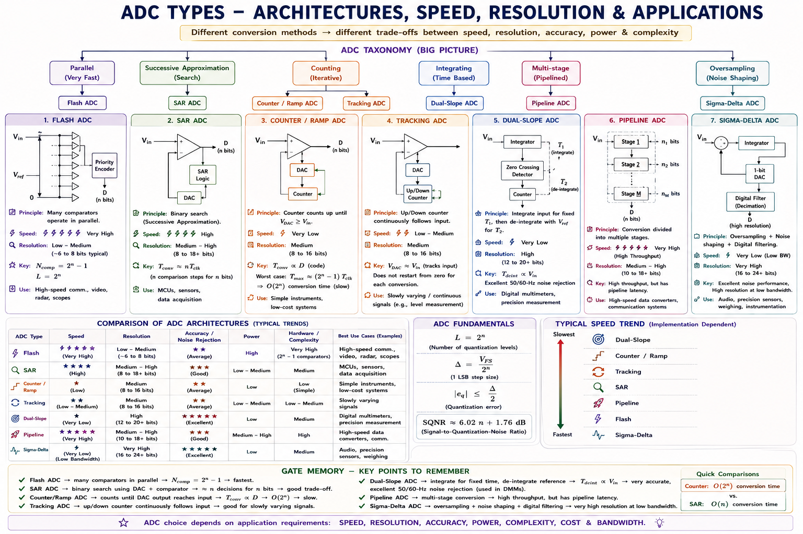
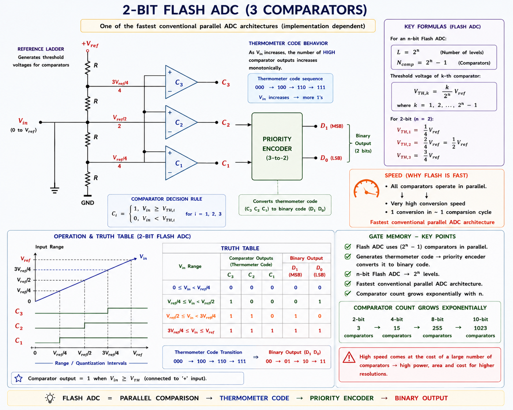
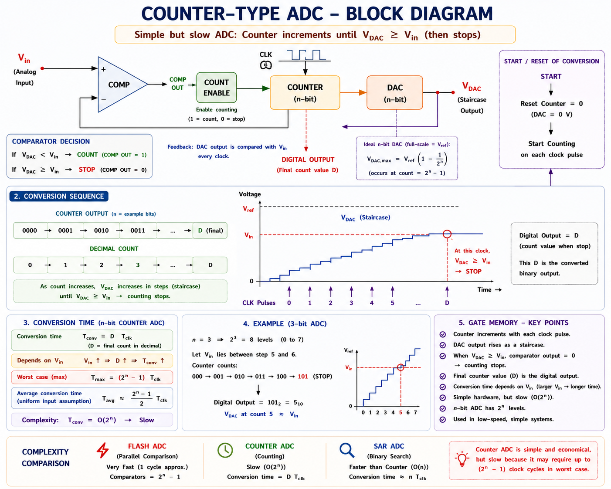
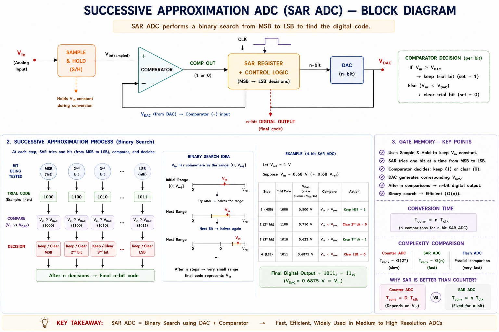
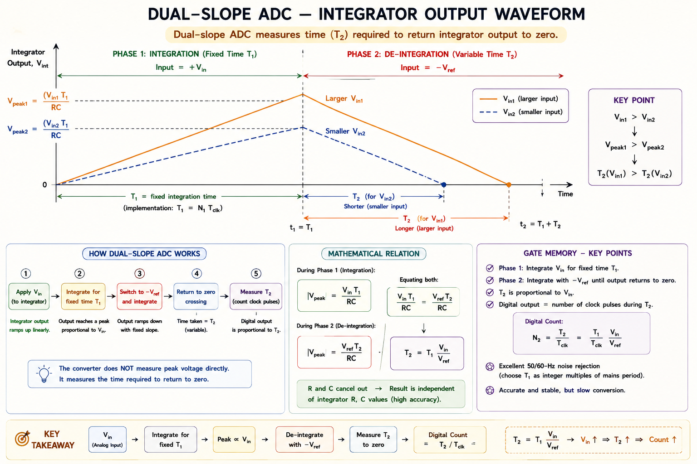

Digital-to-Analog and Analog-to-Digital conversion circuits — weighted resistor DAC, R-2R ladder, Flash ADC, counter-type, tracking, successive approximation, dual-slope ADC — with complete derivations, SVG circuit diagrams, GATE & IES previous year questions, and exam-focused insights.
The physical world speaks analog — temperature, pressure, sound, speed are all continuous quantities. Modern microprocessors, digital communication systems, and computers speak digital — they process only discrete binary numbers. Data converters are the bridge between these two worlds.
A DAC (Digital-to-Analog Converter) converts a binary number into a proportional voltage or current. An ADC (Analog-to-Digital Converter) performs the reverse. Without these, a microphone could never talk to a processor, and a processor could never drive a speaker.

The weighted resistor DAC (also called the binary-weighted DAC) is the simplest and most intuitive DAC topology. Each input bit is connected through a resistor to a summing amplifier. The key insight is: the most significant bit (MSB) has the lowest resistance, so it contributes the largest current — exactly twice the next bit, and so on.
Think of weighted resistors as coffee dispensers — the MSB dispenser has the widest nozzle (smallest R), dispensing twice as much as the next one. The op-amp sums all the currents, producing an output voltage proportional to the binary number you dial in.

For an n-bit DAC with reference voltage \(V_{ref}\) and feedback resistor \(R_f\), each bit \(b_k\) (where \(b_{n-1}\) is MSB) drives a current through its weighted resistor \(2^{n-1-k} \cdot R\).
where \(D\) is the decimal equivalent of the binary input word. When all bits are 1 (i.e., \(D = 2^n - 1\)), the output is maximum (full-scale − 1 LSB).
The weighted resistor DAC requires a wide range of precise resistors — for an 8-bit DAC, the resistor ratio spans 1:128. Achieving 0.01% accuracy across this range is extremely difficult in IC fabrication. This makes the R-2R ladder far more practical for high-resolution DACs.
The R-2R ladder network is the dominant practical DAC topology. The elegance lies in the fact that it uses only two resistor values — R and 2R — regardless of the number of bits. This makes it ideal for monolithic IC fabrication where precise ratios between two values are easy to maintain.
At every node of the ladder, looking left you see a Thévenin resistance of exactly R. This means each 2R shunt resistor divides the voltage by exactly 2 — binary weighting emerges naturally from the network geometry, not from resistor values!

The network is analysed using the principle of superposition. When only \(b_2\) (MSB) = 1 (rest = 0), node C is at \(V_{ref}\). Due to the Thévenin equivalence at each node, the contribution at output is \(V_{ref}/2\). When \(b_1 = 1\) only, node B drives the ladder, and its contribution is \(V_{ref}/4\), and so on.
Notice: no negative sign here — when the bit switches feed into a non-inverting buffer (or the output is taken directly across \(R_L\)), the output is positive and proportional to \(D\). If an inverting op-amp is used, the sign flips.
For a 16-bit weighted resistor DAC, resistors span a ratio of 1:32768. For a 16-bit R-2R DAC, every resistor is either R or 2R — just two values, making IC fabrication trivially precise. This is why all modern precision DAC ICs use R-2R or delta-sigma architectures.
Understanding performance parameters is essential for both circuit design and GATE/IES examination. These parameters quantify how accurately and quickly a converter performs its function.
Resolution is the smallest change in output (for DAC) or input (for ADC) that can be detected. For an n-bit converter with full-scale range \(V_{FS}\):
For an 8-bit ADC with full-scale range 0–5 V: Resolution = 5/256 = 19.53 mV per LSB. For a 12-bit ADC with the same range: Resolution = 5/4096 = 1.22 mV per LSB. Every extra bit halves the step size.
When an analog signal is converted to digital, the exact value cannot always be represented — it must be rounded to the nearest digital level. This rounding introduces quantization error.
The quantization error is unavoidable — it is a fundamental limitation of digitization, not a circuit imperfection. The RMS quantization noise for a full-scale sinusoidal input is:
This famous result means each additional bit improves dynamic range by approximately 6 dB. A 16-bit audio DAC achieves SQNR ≈ 98 dB.
The time required by an ADC to complete one analog-to-digital conversion. This directly determines the maximum sampling frequency of the ADC.
| ADC Type | Conversion Time | Typical Speed | GATE Relevance |
|---|---|---|---|
| Flash ADC | 1 clock cycle | Giga-samples/s | Fastest |
| Successive Approx. (SAR) | n clock cycles | 1–10 MSPS | Most common |
| Tracking ADC | 1–2n cycles (avg) | Moderate | Medium |
| Counter-Type ADC | Up to 2ⁿ cycles | Slow | Slowest |
| Dual-Slope ADC | 2×2ⁿ cycles | Very Slow | Most accurate |
Analog-to-Digital converters are classified based on their conversion technique. Each technique makes a different trade-off between speed, resolution, power, and cost. Understanding these trade-offs is central to GATE questions.

The Flash ADC is the fastest ADC topology. It uses \(2^n - 1\) comparators in parallel, each comparing the input against a reference level derived from a resistor divider. All comparisons happen simultaneously in a single clock cycle.

An 8-bit Flash ADC needs 255 comparators. A 12-bit Flash ADC needs 4095 comparators! This exponential hardware growth limits flash ADCs to 6–8 bits in practice. Pipeline ADC and folding ADC are used to extend resolution while preserving speed.
The counter-type ADC (also called digital ramp ADC) uses a DAC in a feedback loop with a binary counter and comparator. It works like a slowly climbing staircase — the counter increments one step at a time until the DAC output matches the input.

At the start of conversion, the counter is reset to zero. With each clock pulse, the counter increments by 1, and the DAC produces a proportionally increasing output voltage. The comparator continuously checks whether the DAC output has reached (or exceeded) the analog input \(V_{in}\). The moment \(V_{DAC} \geq V_{in}\), the comparator output goes low, the AND gate blocks the clock, the counter freezes, and its value is the digital output.
For a 12-bit counter-type ADC with a 1 MHz clock: worst-case time = \(4096 \times 1\,\mu s = 4.096\,ms\) — very slow! This is the fundamental weakness of the counter-type ADC.
The tracking ADC improves upon the counter-type by using an up/down counter instead of a reset counter. Rather than restarting from zero each conversion, it continuously tracks the input signal, incrementing or decrementing to follow it. This dramatically reduces conversion time for slowly varying signals.
If the input signal changes faster than the counter can track (more than 1 LSB per clock cycle), the tracking ADC cannot follow — this is called slope overload. The tracking ADC is only suitable for slowly varying or quasi-stationary inputs. SAR ADC is preferred for fast-changing signals.
The SAR ADC is the most widely used ADC in embedded systems, data acquisition, and instrumentation. It uses a clever binary search algorithm — it tries each bit from MSB to LSB, deciding whether to keep or reject each bit in exactly one clock cycle. An n-bit conversion takes exactly n clock cycles.
Imagine guessing a weight using a balance scale and weights of 128g, 64g, 32g…1g. You first place 128g — if the unknown is heavier, keep it; otherwise remove it. Then try 64g, and so on. After 8 steps, you have the exact weight to 1g precision. This is exactly how SAR ADC finds the digital code in n steps!

| Step | Bit Tried | SAR Code | DAC Output | Vin vs DAC | Decision |
|---|---|---|---|---|---|
| 1 | MSB = b₃ | 1000 | 8.0 V | 6.8 < 8.0 | Reject b₃ → 0 |
| 2 | b₂ | 0100 | 4.0 V | 6.8 > 4.0 | Keep b₂ → 1 |
| 3 | b₁ | 0110 | 6.0 V | 6.8 > 6.0 | Keep b₁ → 1 |
| 4 | LSB = b₀ | 0111 | 7.0 V | 6.8 < 7.0 | Reject b₀ → 0 |
| — | Done | 0110 | 6.0 V | Error = 0.8V = 1.28 LSB | Final output: 0110 |
The conversion is complete in exactly 4 clock cycles for a 4-bit SAR. Note that the error is within ±1 LSB as expected.
The dual-slope (or dual-ramp) ADC is the gold standard for high-accuracy, noise-immune conversion. It is used in digital multimeters, panel meters, and precision instruments. Although slow, it achieves excellent accuracy because it is inherently immune to variations in component values — the RC time constant cancels out!
Phase 1: Integrate the unknown input Vin for a fixed time \(T_1 = 2^n T_{clk}\). The capacitor charges to a voltage proportional to Vin. Phase 2: Switch to a precise negative reference \(-V_{ref}\) and count how long it takes to discharge back to zero. That count is the digital output!

During Phase 1, the integrator ramps up for fixed time \(T_1 = 2^n T_{clk}\):
During Phase 2, the reference \(-V_{ref}\) discharges the integrator to zero in time \(T_2\):
The key result: \(N \propto V_{in}\) and the RC time constant cancels completely. This makes the dual-slope ADC immune to component variations and temperature drift — as long as R and C don't change during a single conversion (which they don't).
A DMM must display a stable, accurate reading even as temperature changes. Since the RC product cancels in the dual-slope conversion, even a 10% drift in R or C does not affect accuracy. Additionally, the integration over a fixed period \(T_1\) acts as a low-pass filter, averaging out 50Hz/60Hz noise from the power line — perfect for measuring signals in electrically noisy environments.
Given: n = 4, input D = 10112 = 1110, Vref = 10V
The four bits are b₃=1 (MSB), b₂=0, b₁=1, b₀=1 (LSB). Resistors are R, 2R, 4R, 8R for b₃ to b₀.
Alternative using formula: \(V_o = -\frac{V_{ref} \cdot D}{2^n} \times \frac{R_f}{R} = -\frac{10 \times 11}{16} \times 1 = -6.875\,\text{V}\)
The formula \(V_o = -V_{ref}\cdot D/2^n\) applies when \(R_f = R\). When \(R_f \neq R\), multiply by \(R_f/R\). Always check the feedback resistor value before applying the formula.
The SAR ADC is 4096/12 = 341 times faster than the counter-type at the same clock frequency. This demonstrates why SAR is preferred for data acquisition systems.
Explanation: A Flash ADC divides the full-scale range into \(2^n\) equal levels using \(2^n - 1\) comparators (one for each level boundary). For example, a 3-bit Flash ADC needs 7 comparators, not 8, because the 0V level does not need a comparator — it is the default when all outputs are 0.
Explanation: \(V_o = V_{ref} \times D/2^n = 8 \times 6/8 = 6\,\text{V}\). Code 110 = 6 in decimal. With a 3-bit R-2R DAC, \(V_o = 8 \times (1 \times 4 + 1 \times 2 + 0 \times 1)/8 = 8 \times 6/8 = 6\,\text{V}\).
Explanation: In dual-slope conversion, the RC time constant appears in both Phase 1 (\(T_1/RC\)) and Phase 2 (\(T_2/RC\)) expressions and cancels in the ratio. This makes the result independent of R and C tolerances. Additionally, integration over exactly one power-line cycle (20ms for 50Hz) eliminates 50Hz noise — critical for DMM accuracy.
Explanation: The counter-type ADC stops counting when DAC output ≥ Vin. So for a small Vin, the counter stops early (few cycles); for a large Vin near full-scale, it takes up to \(2^n\) cycles. Flash, SAR, and dual-slope have fixed conversion times (n, n, and \(2 \times 2^n\) cycles respectively, independent of the input value).
Explanation: Code 10000000 = 128 in decimal. \(V_o = V_{FS} \times D/2^n = 2.55 \times 128/256 = 2.55/2 = 1.275\,\text{V} \approx 1.28\,\text{V}\). Note: Resolution = 2.55/256 = 9.96mV/LSB. This is a common GATE-style computation where the full-scale is given (not Vref) and the code is the MSB only.
Have a doubt about ADC/DAC? Ask a specific question and get an instant GATE-focused explanation.
Uses R, 2R, 4R... resistors. \( V_o = -\left(\frac{R_f}{R}\right) \cdot V_{ref} \cdot \frac{D}{2^n} \). Simple but impractical for high n due to wide resistor range (1:2ⁿ⁻¹).
Only 2 resistor values regardless of bits. \( V_o = V_{ref} \cdot \frac{D}{2^n} \). RC network provides natural binary weighting. Preferred for ICs.
2ⁿ−1 comparators. 1 clock cycle. Fastest ADC. Exponential hardware cost. Limited to ≤8 bits. No S&H needed.
Simplest. Up to 2ⁿ clock cycles (input-dependent). Resets each conversion. Very slow. Only for low-speed applications.
Binary search. Always exactly n cycles. Best speed/resolution trade-off. Most common in embedded systems. Needs S&H.
Two-phase integration. RC cancels → immune to drift. N = Vin·2ⁿ/Vref. Used in DMMs. Slowest but most accurate.
Operational Amplifier Applications — Precision rectifiers, log/antilog amplifiers, instrumentation amplifiers, Schmitt triggers, waveform generators, and active filters — with complete GATE and IES coverage.
All technical content is derived from the following standard textbooks and learning resources. All explanations, derivations, diagrams and examples are original to Aarova AI.